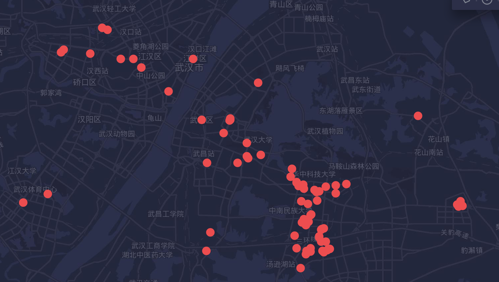

交通与通勤
作为自住的年轻码农来说，相对于医院学校，一般来说交通是更加重要的。
假如你到一个地方工作，想必一定不想天天挤地铁，堵车，甚至搞成同城异地恋。那么降低通勤时间，到公司群附近买房是更好的选择。
定下目标
目标一定要明确，比如我希望付出一定的交通溢价，使我的通勤时间(从出门到完成打卡)在30分钟内
看房时，中介一般用专车接送，但是如果你是屌丝的话，一定要自己坐公交地铁试一下实际的通勤，否则后面又后悔莫及
分解目标
搜集公司位置
通过对拉勾网等网站进行爬数据，可以找到各种IT公司的分布位置。这里的工作地数据比链家等房屋中介更加真实，毕竟公司很少会搬动的。

上面就是武汉的【中级Java工程师】需求公司的分布，可以看出在光谷左侧比较多，而右侧却是空的。我没做出这张图时，以为右边的规划完善的路网才是光谷核心区，没想到却是左边的关山大道。这个就是你通过链家等APP主观想法与实际情况分布的不同。
班车
搜集各大企业的班车路线，并算好通勤时间，以后的接盘侠就靠他们啦。一般来说班车在40分钟内(35公里，这种基本上是跨江了)是可以接受的
地铁规划(地铁房)
在网上搜索"武汉 城市轨道交通 规划"这样的关键字，注意搜索结果要带GOV的才行，本地新闻网站，自媒体，论坛什么的都不要信，你要自己看gov冗长的文档并得出结论，而不是吃别人的快餐。
一些地铁常识
- 地铁一般可以换算为一分钟一公里，2公里一个站台
- 地铁基建造价8亿一公里，羊毛出在羊身上，所以地铁口周边房子就贵了
注意事项
- 如果是新房，售楼中心的沙盘比例一定是错的，建议自己用地图看
- 一般来说，800米内才叫地铁房，中介可能忽悠你的地铁房距离有2KM，那么这种溢价就要低一些
常见距离速算
下面的速度可以用AndroidAPP【运动测速器】来统计时间
- 步行: 1000米从出门开始大概需要10分钟，即1KM/10min
- 公交车: 如果是市内公交车，算上红绿灯一般是24km/h，即4KM/10min
- 班车: 班车一般会上高速(80km/h)，算上下高速堵车的时间，一般是45km/h
- 地铁: 一分钟一公里，约2分钟一个站